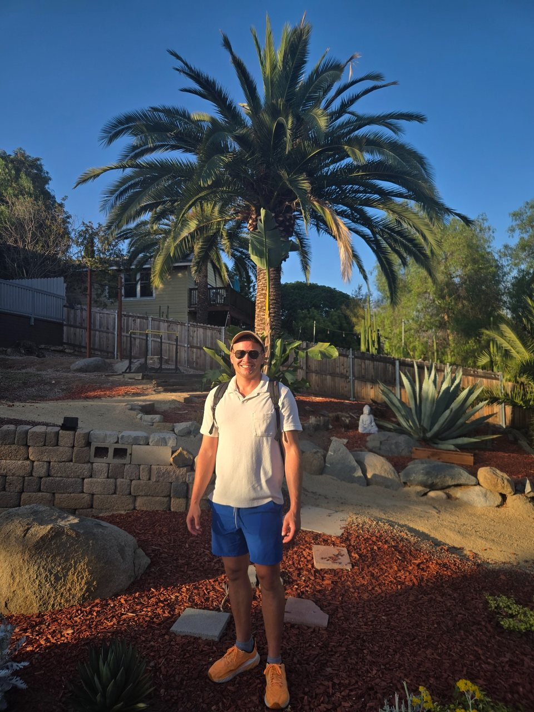
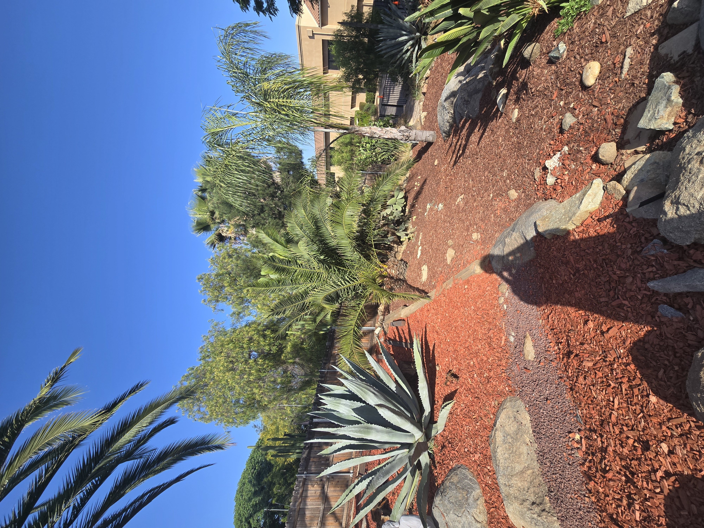

Observation is not diagnosis
I report what I can see and keep suspected causes separate from confirmed facts.
About San Diego Palm Protection
SDPP began after South American palm weevil activity and palm loss reached my own Old Escondido property.
Qualifications
John Krause
Owner, San Diego Palm Protection
California Qualified Applicator License No. 175295
Category B — Landscape Maintenance
Insured
I provide palm assessments, monitoring, documentation, protection and pesticide treatment services, recurring stewardship, decline response, and contractor or removal coordination as applicable.
About John
SDPP grew from firsthand experience with the threat facing the mature palms that help define Old Escondido and other San Diego communities.

I started SDPP after confronting South American palm weevil activity and palm loss on my own Old Escondido property. That experience made the threat very real to me—and made me look more closely at how many mature palms across our neighborhoods could be lost without earlier attention.
I have my B.S. from the University of Minnesota in environmental science and am also a Navy veteran. That background shapes how I approach this work: observe carefully, document what is happening, communicate clearly, and take responsibility for the work performed.
Today, I provide owner-led palm assessments, monitoring, protection, and treatment services throughout San Diego County. I built SDPP to give palm owners a knowledgeable local point of contact—someone who will personally look at the tree, explain what is visible, maintain useful records, and help determine a responsible next step.
Work directly with the owner
I answer the inquiry, visit the property, photograph the palms, write the findings, and discuss the next step with you.
I do not have to translate another person's field notes or guess what happened during the visit. I was there.

Qualification and scope
I hold California Qualified Applicator License No. 175295, Category B — Landscape Maintenance. SDPP is insured and provides assessment, monitoring, documentation, protection and pesticide treatment services as applicable.
Treatment follows the pesticide label, applicable law, site conditions, and agreed scope. I do not promise diagnosis from photographs, treatment efficacy, palm recovery, or guaranteed outcomes.
Local focus
I am based in Old Escondido and focus on mature palms, especially Canary Island date palms, across North County and selected nearby San Diego communities.
Firsthand experience
I have personally dealt with SAPW activity on my Canary Island date palms in Old Escondido. I do not turn every symptom into a diagnosis, but I do believe owners should photograph changes early and take them seriously.
I report what I can see and keep suspected causes separate from confirmed facts.
They are the baseline for a later comparison, not decoration.
Sometimes the most useful finding is whether the palm looks stable or has continued to change.
Start a conversation
Homeowners can request an assessment. Managers, HOAs, institutions, and other property stakeholders can discuss a palm portfolio.
Private inquiry
Tell me what you are seeing and what you need to decide. I work with single palms, small groups, and larger managed properties.